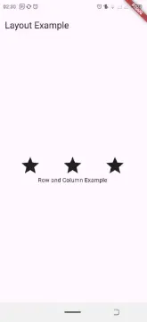
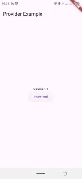
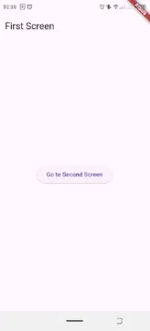
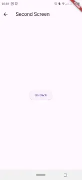
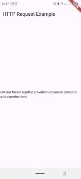

Développer des Applications Multiplateformes avec Flutter
- MON
- 2024-2025
- développement mobile
- Flutter
- Dart
- Serigne Mbaye Sy AMAR
Ce MON explique comment utiliser Flutter, un framework multiplateforme de Google, pour créer des applications avec une seule base de code. Il couvre l'installation, la configuration, la création de projets, et les concepts de base comme les widgets et les layouts. Il introduit aussi la gestion de l'état avec Provider, la navigation entre pages, et les appels HTTP pour interagir avec des API.
- Connaissance de base en programmation (de préférence en Dart, mais pas obligatoire).
Les lien utiles pour la compréhension de celui-ci:
Table des matières
Introduction
Flutter est un framework open-source développé par Google. Il permet de créer des applications multiplateformes (Android, iOS, Web, Desktop) à partir d'une seule base de code, ce qui réduit le coût et le temps de développement. L'un des principaux atouts de Flutter est sa performance proche du natif, grâce au langage Dart et à son moteur graphique optimisé.
Dart, le langage derrière Flutter, est un langage moderne et rapide pour le développement client. Avec Flutter, tout est un widget, permettant ainsi une personnalisation et un contrôle total sur l'interface utilisateur.
1. Installation et Configuration de l'Environnement
Installation d'Android Studio
-
On télécharger Android Studio et on l'instale. C'est l'IDE recommandé par Google pour développer des applications Android, et il fournit un émulateur Android intégré pour tester tes projets Flutter.
-
Sans oublier l'option pour installer le SDK Android est cochée pendant l'installation.
Installation des plugins Flutter
-
Une fois Android Studio installé, on l'ouvre et on navigue vers File > Settings > Plugins.
-
Ici on recherche Flutter et Dart, puis on les installe. Ces plugins te permettent de développer des applications Flutter directement depuis Android Studio.
Installation de Flutter
-
On télécharge Flutter depuis le site officiel : flutter.dev.
-
Puis on suis les instructions qui varient par rapport au système d'exploitation (Windows, macOS, Linux)(mets le lien ici).
-
Après l'installation, on exécute la commande flutter doctor pour vérifier que toutes les dépendances sont bien installées (SDK Android, émulateur, etc.).
Création d'un projet Flutter
-
Une fois Flutter configuré, on peut créer un premier projet. Dans Android Studio, on clique sur New Flutter Project, on choisi un nom et spécifie le chemin d'installation de Flutter.
-
L'arborescence du projet sera générée automatiquement, avec des dossiers pour Android, iOS, et d'autres plateformes.
Création d'un émulateur Android
- Dans Android Studio, on navigue vers AVD Manager (Android Virtual Device) et on configure un nouvel appareil virtuel. Cela nous permet de tester l'application sur un émulateur Android pour mon cas j'utilise mon telephone.
2. Les Widgets : Le cœur de Flutter
Qu'est-ce qu'un widget ?
Dans Flutter, tout est un widget. Cela signifie que chaque composant visuel ou structure est un widget, que ce soit un texte, une image, un bouton ou même un conteneur. Flutter repose sur une architecture basée sur les widgets pour permettre une construction des interfaces utilisateur.
Il existe deux types principaux de widgets :
-
StatelessWidget : Un widget sans état, c'est-à-dire que son contenu est fixe et ne change pas au cours de l'exécution.
-
StatefulWidget : Un widget avec un état mutable, capable de se mettre à jour lorsque des changements surviennent.
Exemple de StatefulWidget
Un widget qui affiche du texte statique.
// Importation du package Flutter qui contient les widgets nécessaires pour créer une interface utilisateur
import 'package:flutter/material.dart';
// Fonction principale de l'application Flutter, c'est le point d'entrée de l'application
void main() {
// La fonction runApp() démarre l'application en exécutant le widget MyApp..
runApp(MyApp());
}
// Création de la classe MyApp, un StatefulWidget, ce qui signifie que cet écran peut avoir un état qui change
class MyApp extends StatefulWidget {
// Cette méthode crée l'état associé au StatefulWidget
_MyAppState createState() => _MyAppState();
}
// Classe représentant l'état de MyApp, c'est ici que nous allons gérer les changements d'état
class _MyAppState extends State<MyApp> {
// Déclaration d'une variable entière _counter pour stocker la valeur du compteur, initialisée à 0
int _counter = 0;
// Fonction qui permet d'incrémenter la valeur de _counter et de rafraîchir l'interface utilisateur
void _incrementCounter() {
// La méthode setState() informe Flutter que l'interface doit être mise à jour
setState(() {
_counter++; // Incrémente la valeur du compteur
});
}
// Méthode build qui construit l'interface utilisateur
Widget build(BuildContext context) {
// Retourne un MaterialApp pour définir l'application avec une structure en Material Design
return MaterialApp(
// Scaffold fournit une structure de base pour la page avec une appBar et un body
home: Scaffold(
// Barre d'application en haut avec un titre
appBar: AppBar(title: Text('StatefulWidget Example')),
// Contenu principal de la page
body: Center(
// Utilisation d'un widget Column pour organiser les widgets verticalement
child: Column(
// Alignement des widgets au centre de l'axe vertical
mainAxisAlignment: MainAxisAlignment.center,
children: <Widget>[
// Texte qui affiche la valeur actuelle du compteur
Text('Counter: $_counter'),
// Bouton qui, lorsqu'il est pressé, appelle la fonction _incrementCounter pour augmenter le compteur
ElevatedButton(
// La fonction onPressed définit l'action lorsque le bouton est pressé
onPressed: _incrementCounter,
// Le texte affiché sur le bouton
child: Text('Increment'),
),
],
),
),
),
);
}
}
Exemple de StatelessWidget
Un widget qui affiche du texte statique.
// Importation du package Flutter qui contient tout ce qui est nécessaire pour créer une interface utilisateur
import 'package:flutter/material.dart';
// Fonction principale de l'application Flutter, c'est le point d'entrée de l'application
void main() {
// La fonction runApp() lance l'application en exécutant le widget MyApp
runApp(MyApp());
}
// Définition de la classe MyApp qui hérite de StatelessWidget, ce qui signifie que l'interface utilisateur ne changera pas (pas d'état mutable)
class MyApp extends StatelessWidget {
// Le constructeur build est appelé pour créer l'interface utilisateur
Widget build(BuildContext context) {
// Retourne un MaterialApp, qui est un widget Flutter pour les applications utilisant le design Material (style Android)
return MaterialApp(
// La propriété home définit l'interface principale de l'application (la page d'accueil)
home: Scaffold(
// La propriété appBar permet d'afficher une barre d'application en haut de l'écran
appBar: AppBar(
// Titre de la barre d'application
title: Text('Mon Application Flutter'),
),
// La propriété body définit le contenu principal de la page
body: Center(
// Affichage d'un texte au centre de la page
child: Text('Hello, Flutter!'),
),
),
);
}
}
3. Organisation de l'interface : Les Layouts
Les layouts dans Flutter permettent d'organiser les widgets à l'écran. Il existe plusieurs types de widgets pour les layouts, mais les plus courants sont :
-
Row : Organise les widgets horizontalement.
-
Column : Organise les widgets verticalement.
Exemple : Utilisation de Row et Column
4. Gestion de l'état avec Provider
La gestion de l'état est important dans une application Flutter. Provider est l'un des packages les plus utilisés pour simplifier cette gestion.
Installation de Provider
On ajoute la dépendance suivante dans le fichier pubspec.yaml :
dependencies:
provider: ^6.1.2
la derniere version (6.1.2) est sortie il y a 7 mois.
Exemple d'utilisation de Provider
Voici comment utiliser Provider pour gérer un compteur :
5. Navigation dans Flutter
Flutter permet de gérer facilement la navigation entre différentes pages avec le widget Navigator.
Exemple de navigation entre deux pages
 6. Appels HTTP et interactions avec une API
Flutter peut facilement faire des appels réseau avec le package http. Cela est utile pour interagir avec des API externes et récupérer des données.
Exemple de requête HTTP
Horodatage
| Date | Heures passées | Indications |
|---|---|---|
| Lundi 30/09 | 2h00 | Début des recherches et installations nécessaires |
| Samedi & Dimanche 05-06/10 | 4h00 | [Cours / Tuto] Apprendre à coder pour les vrais débutants avec Dart et Flutter sur YouTube |
| Jeudi 10/10 | 3h00 | Approfondissement de mes recherches sur le sujet |
| Samedi 12/10 | 1h00 | Restitution des idées |
Conclusion
Flutter est une solution pour le développement d'applications multiplateformes. Si on maitrise les concepts de base et en approfondissant un peu des sujets comme la gestion de l'état avec Provider, la navigation, et les appels réseau, on sera capable de créer des applications modernes.